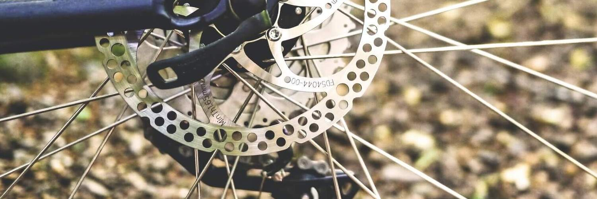

Overview
Purpose
To help people find a place to buy high quality bicycles and learn where the best places are to go riding are.
Audience
Anyone who is wanting to spend time outdoors and enjoy nature
Branding
Website Logo

Style Guide
Color Palette
Palette URL: https://coolors.co/06aed5-086788-f0c808-fff1d0-dd1c1a| Primary | Secondary | Accent 1 | Accent 2 |
|---|---|---|---|
| #06aed5 | #086788 | #f0c808 | #dd1c1a |
Typography
Heading Font: Bebas Neue
Paragraph Font: Yanone Kaffeesatz
Main Idea for Site
I want this website to be a place where people can go to get detailed information about gear to use, places to go, and where to buy your gear locally here in Ogden, UT. The reason I had this idea is because I feel there aren't a lot of places where you can go to get all the information you need in one location. Usually, you have to visit multiple sources or videos in order to get what you are looking for. And if I could help create a place where this is all readily available for viewers, that would help fix that issue.
Home Page Content Pt 1.
On this main home page, I was thinking about having three boxes under the hero image to also be used as links for the nav links. One of those links will take you to the "About Us" page. The middle one will take you to the "What to Expect" page where we will dive in to what you should know about mountain biking before you start riding for yourself. In that "What to Expect" box as well, you will find a bunch of info of what local wildlife is present that you need to be wary of while riding the trails. We want to help people have an idea of what the wildlife looks like and what to do to avoid those creatures. And then the last box will be for the "Events" page. This is pretty self-explanatory. It is used to show upcoming dates for things we are hosting or what other people are hosting locally in the Ogden, UT area.
Home Page Content Pt 2.
Near the bottom of the home page, we will have two images and two word boxes where we will link the most recent article in the top box where it will talk about mountain biking or extreme weather for the local region. The bottom box will have text talking about the pros and cons to buying cheaper gear or buying more expensive gear. And that text box will have links to the local bike shops where you can browse their catalogs and get the gear you are looking for.
About Us
In the "About Us" section, we will go over why we are building this site for people. We will talk about how you need to go through many hoops to find what you are looking for with other sources. We just want to create a platform where it is a one-stop-shop for all your information.
Main Topics
"What to Expect", "Events"
Navigation
Site Map
Content
Home page
I want this website to be a place where people can go to get detailed information about gear to use, places to go, and where to buy your gear locally here in Ogden, UT. The reason I had this idea is because I feel there aren't a lot of places where you can go to get all the information you need in one location. Usually, you have to visit multiple sources or videos in order to get what you are looking for. And if I could help create a place where this is all readily available for viewers, that would help fix that issue.
Images for the Home page
What to Expect
The "What to Expect" page where we will dive in to what you should know about mountain biking before you start riding for yourself. In that "What to Expect" box as well, you will find a bunch of info of what local wildlife is present that you need to be wary of while riding the trails. We want to help people have an idea of what the wildlife looks like and what to do to avoid those creatures.
Images for the Page 2
Events
The "Events" page. This is pretty self-explanatory. It is used to show upcoming dates for things we are hosting or what other people are hosting locally in the Ogden, UT area.
Images for the Page 3
Wireframes
Create three wireframes for your site. One for each page and list them here
Home
[Any additional details about home that the wireframe does not make clear]
What to Expect
[Any additional details about page 2 that the wireframe does not make clear]
Events
[Any additional details about page 3 that the wireframe does not make clear]